Chapter 5: Geometric operations
Robin Lovelace, Jakub Nowosad, Jannes Muenchow
2021-09-21
Source:vignettes/solutions05.Rmd
solutions05.RmdPrerequisites
The solutions assume the following packages are attached (other packages will be attached when needed):
Some of the exercises use a vector (random_points) and raster dataset (ndvi) from the spDataLarge package. They also use a polygonal ‘convex hull’ derived from the vector dataset (ch) to represent the area of interest:
data(random_points)
data(ndvi)
ch = st_combine(random_points) %>%
st_convex_hull()Chapter 5
- Generate and plot simplified versions of the
nzdataset. Experiment with different values ofkeep(ranging from 0.5 to 0.00005) forms_simplify()anddTolerance(from 100 to 100,000)st_simplify().- At what value does the form of the result start to break-down for each method, making New Zealand unrecognizable?
- Advanced: What is different about the geometry type of the results from
st_simplify()compared with the geometry type ofms_simplify()? What problems does this create and how can this be resolved?
plot(rmapshaper::ms_simplify(st_geometry(nz), keep = 0.5))
#> Registered S3 method overwritten by 'geojsonlint':
#> method from
#> print.location dplyr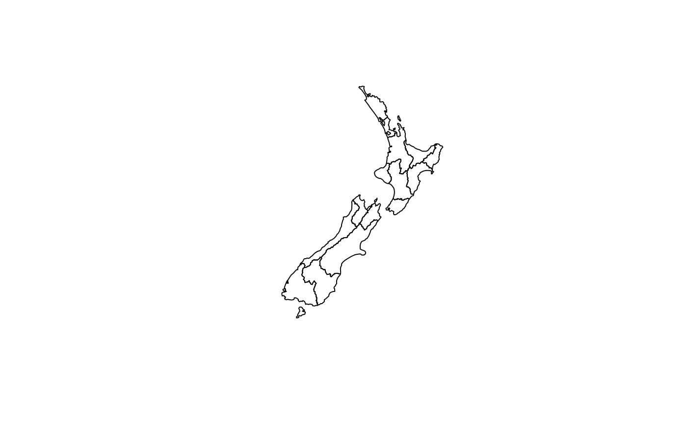
plot(rmapshaper::ms_simplify(st_geometry(nz), keep = 0.05))
# Starts to breakdown here at 0.5% of the points:
plot(rmapshaper::ms_simplify(st_geometry(nz), keep = 0.005))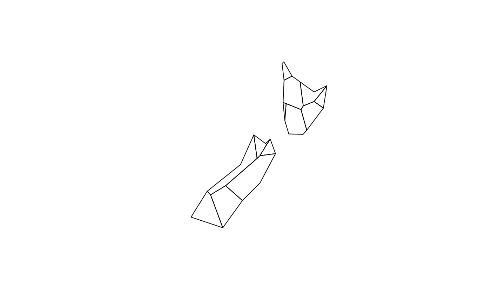
# At this point no further simplification changes the result
plot(rmapshaper::ms_simplify(st_geometry(nz), keep = 0.0005))
plot(rmapshaper::ms_simplify(st_geometry(nz), keep = 0.00005))
plot(st_simplify(st_geometry(nz), dTolerance = 100))
plot(st_simplify(st_geometry(nz), dTolerance = 1000))
# Starts to breakdown at 10 km:
plot(st_simplify(st_geometry(nz), dTolerance = 10000))
plot(st_simplify(st_geometry(nz), dTolerance = 100000))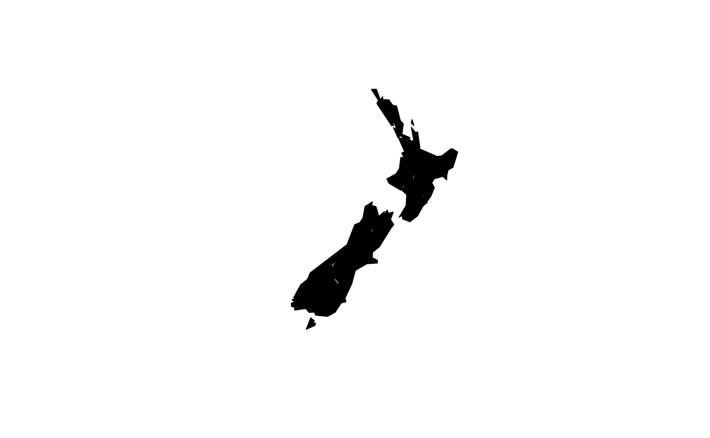
plot(st_simplify(st_geometry(nz), dTolerance = 100000, preserveTopology = TRUE))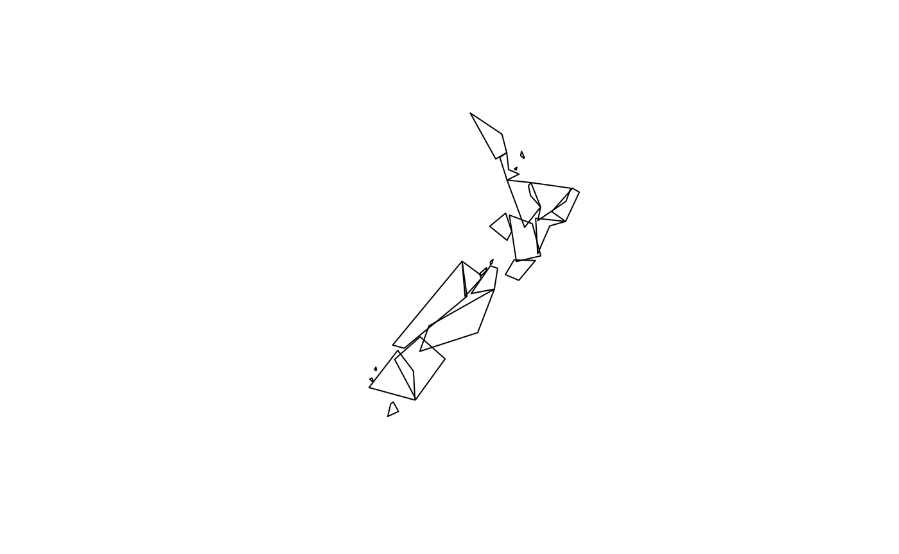
# Problem: st_simplify returns POLYGON and MULTIPOLYGON results, affecting plotting
# Cast into a single geometry type to resolve this
nz_simple_poly = st_simplify(st_geometry(nz), dTolerance = 10000) %>%
st_sfc() %>%
st_cast("POLYGON")
#> Warning in st_cast.MULTIPOLYGON(X[[i]], ...): polygon from first part only
#> Warning in st_cast.MULTIPOLYGON(X[[i]], ...): polygon from first part only
nz_simple_multipoly = st_simplify(st_geometry(nz), dTolerance = 10000) %>%
st_sfc() %>%
st_cast("MULTIPOLYGON")
plot(nz_simple_poly)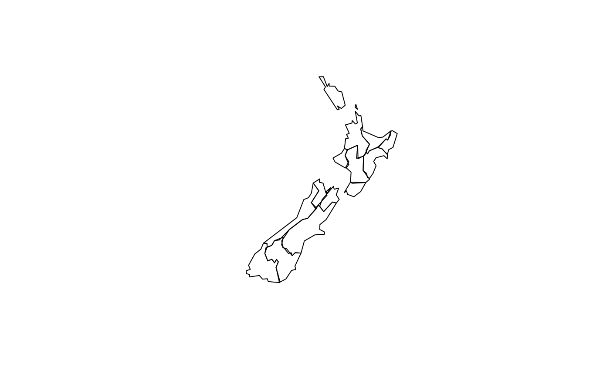
- In the first exercise in this Chapter it was established that Canterbury region had 70 of the 101 highest points in New Zealand. Using
st_buffer(), how many points innz_heightare within 100 km of Canterbury?
canterbury = nz[nz$Name == "Canterbury", ]
cant_buff = st_buffer(canterbury, 100)
nz_height_near_cant = nz_height[cant_buff, ]
nrow(nz_height_near_cant) # 75 - 5 more
#> [1] 75- Find the geographic centroid of New Zealand. How far is it from the geographic centroid of Canterbury?
cant_cent = st_centroid(canterbury)
#> Warning in st_centroid.sf(canterbury): st_centroid assumes attributes are
#> constant over geometries of x
nz_centre = st_centroid(st_union(nz))
st_distance(cant_cent, nz_centre) # 234 km
#> Units: [m]
#> [,1]
#> [1,] 234192.6- Most world maps have a north-up orientation. A world map with a south-up orientation could be created by a reflection (one of the affine transformations not mentioned in this section) of the
worldobject’s geometry. Write code to do so. Hint: you need to use a two-element vector for this transformation.- Bonus: create a upside down map of your country.
world_sfc = st_geometry(world)
world_sfc_mirror = world_sfc * c(-1, -1)
#> Warning in mapply(function(x, y) {: longer argument not a multiple of length of
#> shorter
plot(world_sfc)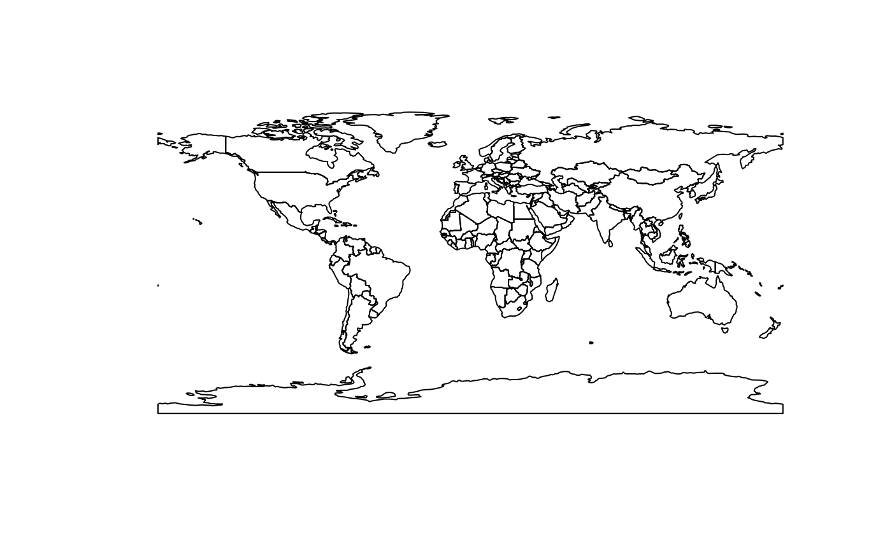
plot(world_sfc_mirror)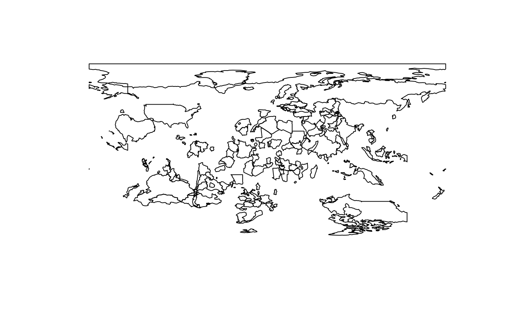
us_states_sfc = st_geometry(us_states)
us_states_sfc_mirror = us_states_sfc * c(-1, -1)
#> Warning in mapply(function(x, y) {: longer argument not a multiple of length of
#> shorter
plot(us_states_sfc)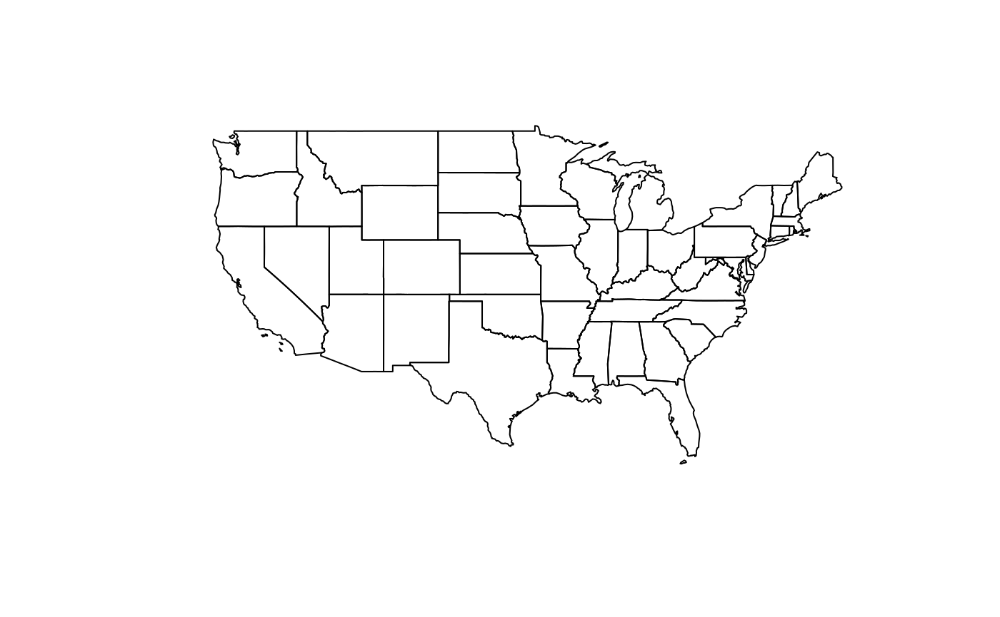
plot(us_states_sfc_mirror)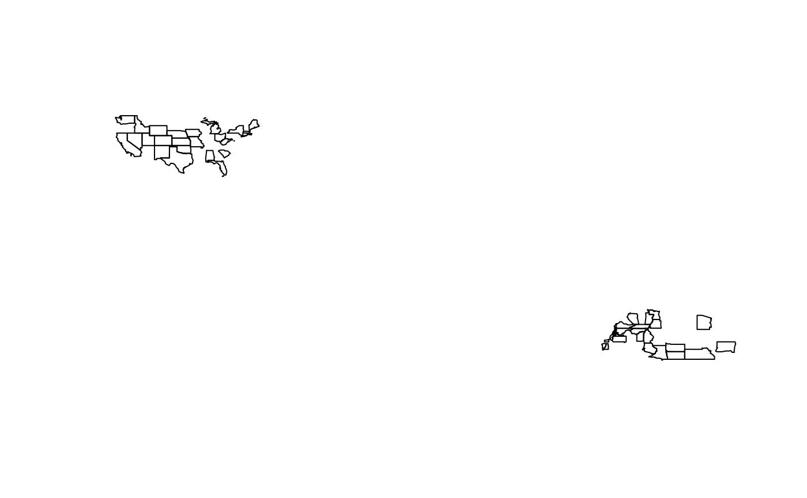
## nicer plot
# library(ggrepel)
# us_states_sfc_mirror_labels = st_centroid(us_states_sfc_mirror) %>%
# st_coordinates() %>%
# as_data_frame() %>%
# mutate(name = us_states$NAME)
# us_states_sfc_mirror_sf = st_set_geometry(us_states, us_states_sfc_mirror)
# ggplot(data = us_states_sfc_mirror_sf) +
# geom_sf(color = "white") +
# geom_text_repel(data = us_states_sfc_mirror_labels, mapping = aes(X, Y, label = name), size = 3, min.segment.length = 0) +
# theme_void() - Subset the point in
pthat is contained withinxandy(see this section and this Figure).- Using base subsetting operators.
- Using an intermediary object created with
st_intersection().
# data preparation
b = st_sfc(st_point(c(0, 1)), st_point(c(1, 1))) # create 2 points
b = st_buffer(b, dist = 1) # convert points to circles
x = b[1]
y = b[2]
bb = st_bbox(st_union(x, y))
pmat = matrix(c(bb[c(1, 2, 3, 2, 3, 4, 1, 4, 1, 2)]), ncol = 2, byrow = TRUE)
box = st_polygon(list(pmat))
set.seed(2017)
p = st_sample(x = box, size = 10)
p_in_y = p[y]
p_in_xy = p_in_y[x]
x_and_y = st_intersection(x, y)
p[x_and_y]
#> Geometry set for 1 feature
#> Geometry type: POINT
#> Dimension: XY
#> Bounding box: xmin: 0.3047168 ymin: 1.431415 xmax: 0.3047168 ymax: 1.431415
#> CRS: NA
#> POINT (0.3047168 1.431415)- Calculate the length of the boundary lines of US states in meters. Which state has the longest border and which has the shortest? Hint: The
st_lengthfunction computes the length of aLINESTRINGorMULTILINESTRINGgeometry.
us_states2163 = st_transform(us_states, 2163)
us_states_bor = st_cast(us_states2163, "MULTILINESTRING")
us_states_bor$borders = st_length(us_states_bor)
arrange(us_states_bor, borders) %>% slice(1)
#> Simple feature collection with 1 feature and 7 fields
#> Geometry type: MULTILINESTRING
#> Dimension: XY
#> Bounding box: xmin: 1950825 ymin: -415971.5 xmax: 1969385 ymax: -393947.3
#> Projected CRS: US National Atlas Equal Area
#> GEOID NAME REGION AREA total_pop_10 total_pop_15
#> 1 11 District of Columbia South 178.21 [km^2] 584400 647484
#> borders geometry
#> 1 60322.91 [m] MULTILINESTRING ((1950825 -...
arrange(us_states_bor, -borders) %>% slice(1)
#> Simple feature collection with 1 feature and 7 fields
#> Geometry type: MULTILINESTRING
#> Dimension: XY
#> Bounding box: xmin: -630041.5 ymin: -2116610 xmax: 621671.6 ymax: -939313.8
#> Projected CRS: US National Atlas Equal Area
#> GEOID NAME REGION AREA total_pop_10 total_pop_15 borders
#> 1 48 Texas South 687714.3 [km^2] 24311891 26538614 4961585 [m]
#> geometry
#> 1 MULTILINESTRING ((-269040 -...- Crop the
ndviraster using (1) therandom_pointsdataset and (2) thechdataset. Are there any difference in the output maps? Next, maskndviusing these two datasets. Can you see any difference now? How can you explain that?
plot(ndvi)
plot(st_geometry(random_points), add = TRUE)
plot(ch, add = TRUE)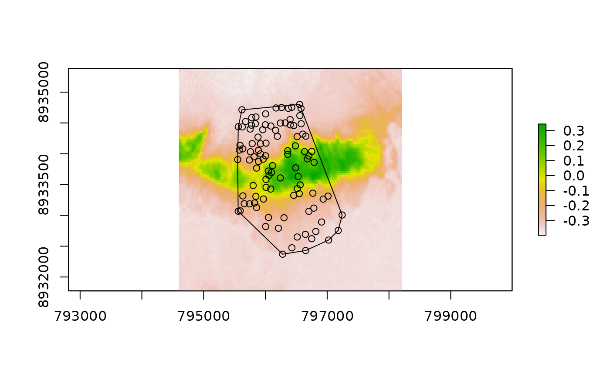
ndvi_crop1 = crop(ndvi, as(random_points, "Spatial"))
#> old-style crs object detected; please recreate object with a recent sf::st_crs()
#> old-style crs object detected; please recreate object with a recent sf::st_crs()
ndvi_crop2 = crop(ndvi, as(ch, "Spatial"))
plot(ndvi_crop1)
plot(ndvi_crop2)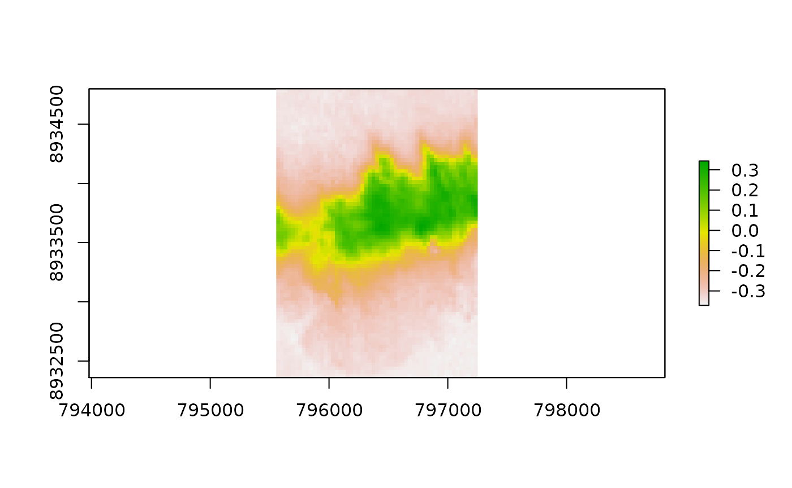
ndvi_mask1 = mask(ndvi, as(random_points, "Spatial"))
#> old-style crs object detected; please recreate object with a recent sf::st_crs()
#> old-style crs object detected; please recreate object with a recent sf::st_crs()
ndvi_mask2 = mask(ndvi, as(ch, "Spatial"))
plot(ndvi_mask1)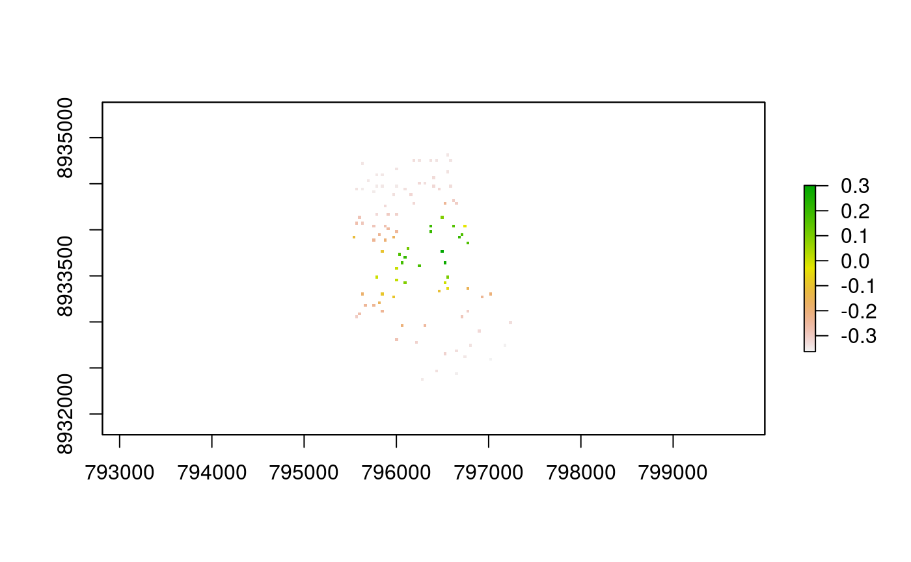
plot(ndvi_mask2)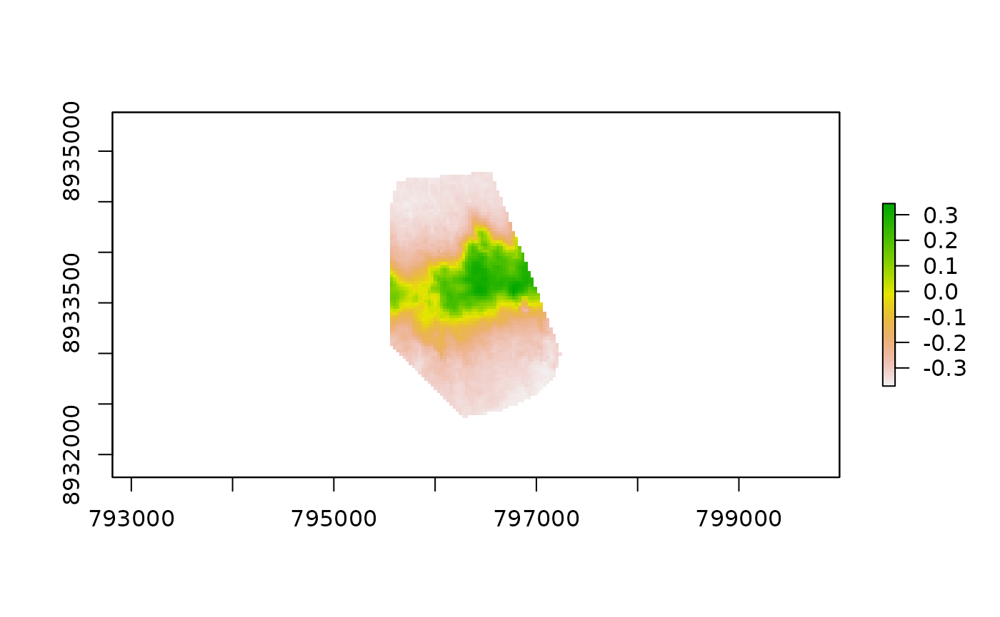
There are not any differences between the two output maps after cropping, but the outputs after masking are very different. In the first case, ndvi is cropped only to the extent of the bounding box, and both random_points and ch have exactly the same bounding box. In the second case, masking by random_points only keeps raster cells that are overlayed by these points, while masking by ch keeps all raster cells that are within the ch polygon.
- Firstly, extract values from
ndviat the points represented inrandom_points. Next, extract average values ofndviusing a 90 buffer around each point fromrandom_pointsand compare these two sets of values. When would extracting values by buffers be more suitable than by points alone?
random_points_buf = st_buffer(random_points, dist = 90)
#> old-style crs object detected; please recreate object with a recent sf::st_crs()
#> old-style crs object detected; please recreate object with a recent sf::st_crs()
plot(ndvi)
plot(st_geometry(random_points_buf), add = TRUE)
plot(ch, add = TRUE)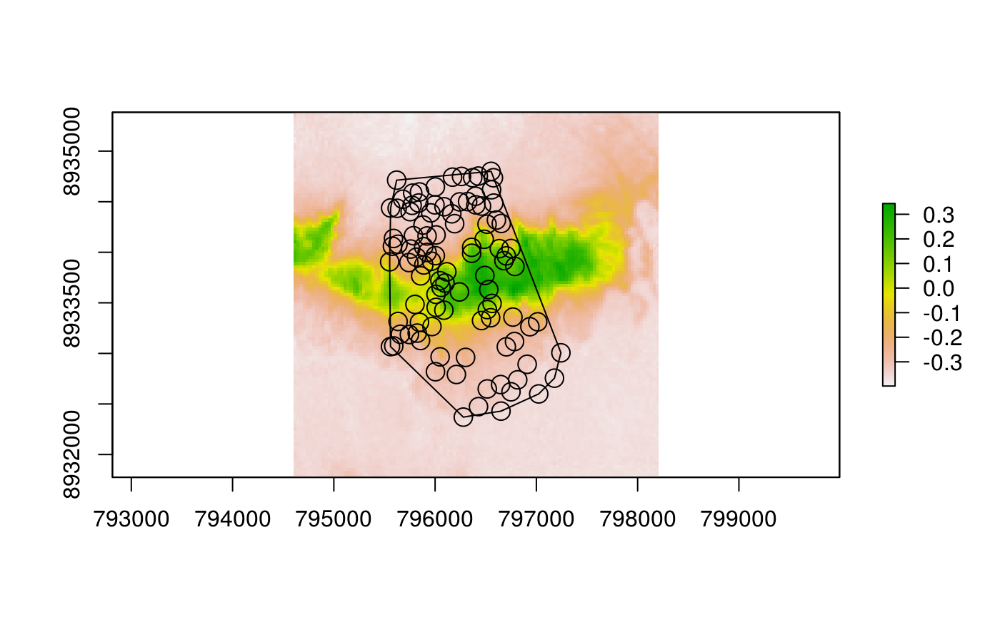
random_points$ndvi1 = raster::extract(ndvi, as(random_points, "Spatial"))
#> old-style crs object detected; please recreate object with a recent sf::st_crs()
#> old-style crs object detected; please recreate object with a recent sf::st_crs()
random_points$ndvi2 = raster::extract(ndvi, as(random_points, "Spatial"), buffer = 90, fun = mean)
#> old-style crs object detected; please recreate object with a recent sf::st_crs()
#> old-style crs object detected; please recreate object with a recent sf::st_crs()
plot(random_points$ndvi1, random_points$ndvi2)
Extracting values by buffers is more suitable than by points alone, for example when we expect errors in single raster cells. Average values can decrease an effect of erroneous values in some raster cells.
- Subset points higher than 3100 meters in New Zealand (the
nz_heightobject) and create a template raster with a resolution of 3km. Using these objects:- Count numbers of the highest points in each grid cell.
- Find the maximum elevation in each grid cell.
nz_height3100 = dplyr::filter(nz_height, elevation > 3100)
new_graticule = st_graticule(nz_height3100, datum = 2193)
plot(st_geometry(nz_height3100), graticule = new_graticule, axes = TRUE)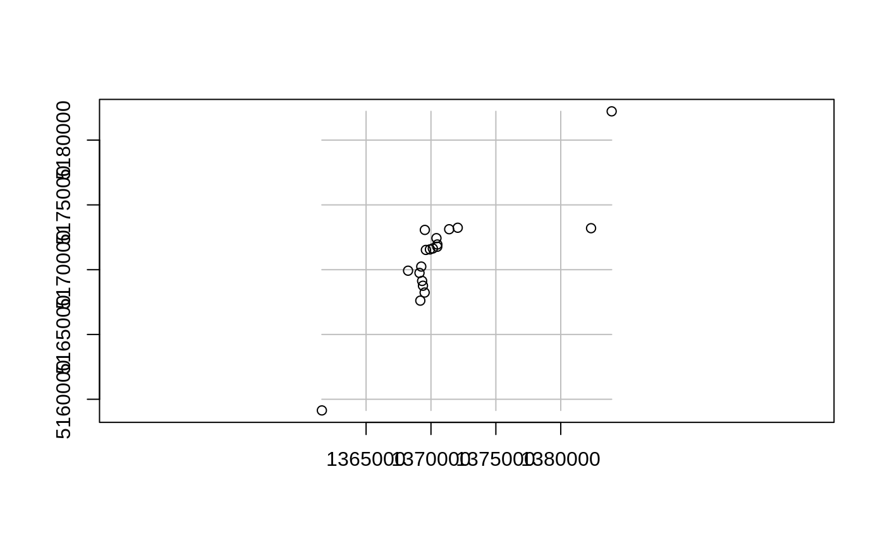
nz_template = raster(extent(nz_height3100), resolution = 3000,
crs = st_crs(nz_height3100)$proj4string)
#> Warning in showSRID(uprojargs, format = "PROJ", multiline = "NO", prefer_proj
#> = prefer_proj): Discarded datum Unknown based on GRS80 ellipsoid in Proj4
#> definition
nz_raster = rasterize(nz_height3100, nz_template,
field = "elevation", fun = "count")
plot(nz_raster)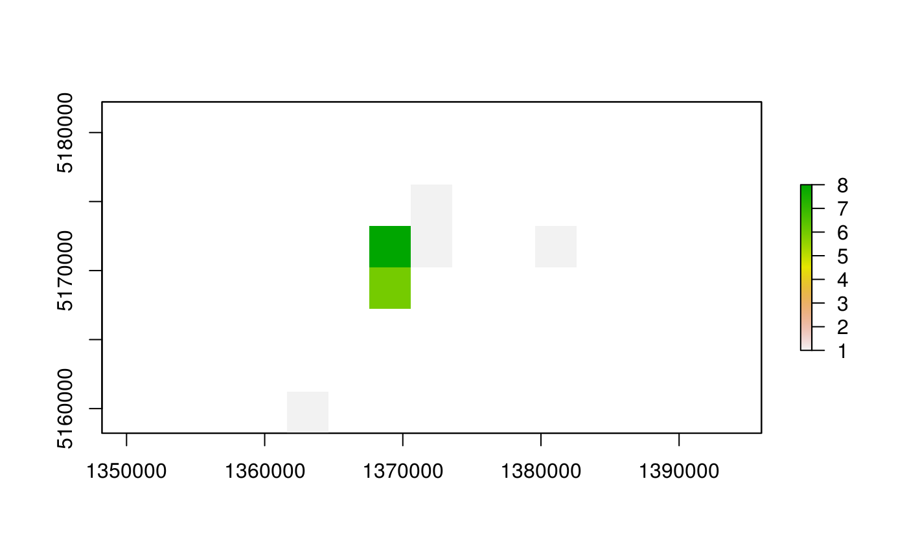
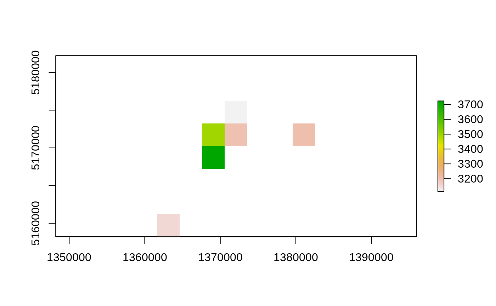
- Aggregate the raster counting high points in New Zealand (created in the previous exercise), reduce its geographic resolution by half (so cells are 6 by 6 km) and plot the result.
- Resample the lower resolution raster back to a resolution of 3 km. How have the results changed?
- Name two advantages and disadvantages of reducing raster resolution.
nz_raster_low = raster::aggregate(nz_raster, fact = 2, fun = sum)
res(nz_raster_low)
nz_resample = resample(nz_raster_low, nz_raster)
plot(nz_raster_low)
plot(nz_resample) # the results are spread over a greater area and there are border issues
plot(nz_raster)advantage: lower memory use advantage: faster processing advantage: good for viz in some cases disadvantage: removes geographic detail disadvantage: another processing step
- Polygonize the
graindataset and filter all squares representing clay.- Name two advantages and disadvantages of vector data over raster data.
- At which points would it be useful to convert rasters to vectors in your work?
grain_poly = rasterToPolygons(grain) %>%
st_as_sf()
levels(grain)
#> [[1]]
#> ID VALUE
#> 1 1 clay
#> 2 2 silt
#> 3 3 sand
clay = dplyr::filter(grain_poly, layer == 1)
plot(clay)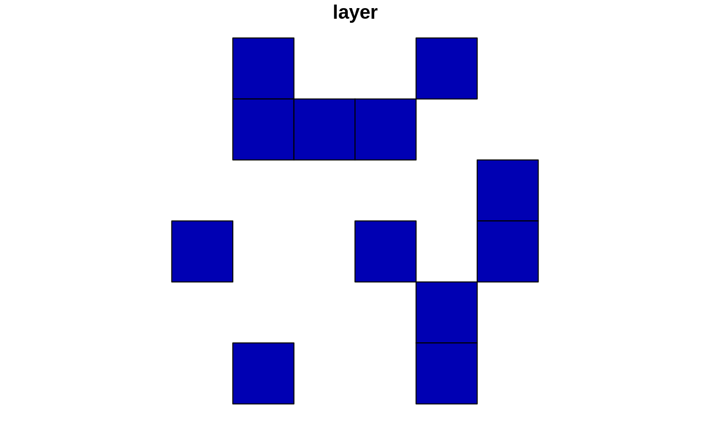
advantages: - can be used to subset other vector objects - can do affine transformations and use sf/dplyr verbs disadvantages: - better consistency, fast processing on some operations, functions developed for some domains